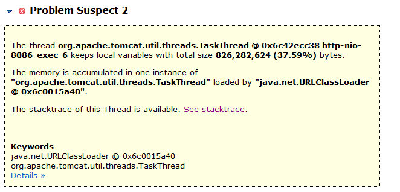
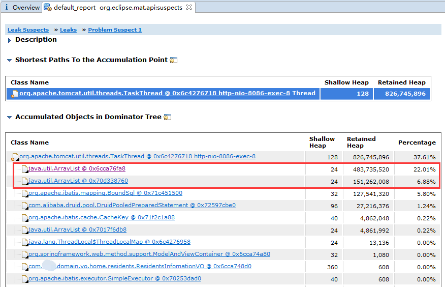
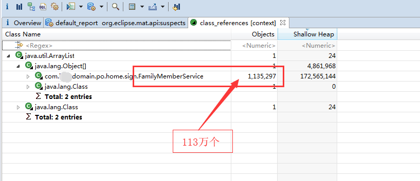

- 01 阅读此专栏的正确姿势.md.html
- 02 环境准备：千里之行，始于足下.md.html
- 03 常用性能指标：没有量化，就没有改进.md.html
- 04 JVM 基础知识：不积跬步，无以至千里.md.html
- 05 Java 字节码技术：不积细流，无以成江河.md.html
- 06 Java 类加载器：山不辞土，故能成其高.md.html
- 07 Java 内存模型：海不辞水，故能成其深.md.html
- 08 JVM 启动参数详解：博观而约取、厚积而薄发.md.html
- 09 JDK 内置命令行工具：工欲善其事，必先利其器.md.html
- 10 JDK 内置图形界面工具：海阔凭鱼跃，天高任鸟飞.md.html
- 11 JDWP 简介：十步杀一人，千里不留行.md.html
- 12 JMX 与相关工具：山高月小，水落石出.md.html
- 13 常见的 GC 算法（GC 的背景与原理）.md.html
- 14 常见的 GC 算法（ParallelCMSG1）.md.html
- 15 Java11 ZGC 和 Java12 Shenandoah 介绍：苟日新、日日新、又日新.md.html
- 16 Oracle GraalVM 介绍：会当凌绝顶、一览众山小.md.html
- 17 GC 日志解读与分析（基础配置）.md.html
- 18 GC 日志解读与分析（实例分析上篇）.md.html
- 19 GC 日志解读与分析（实例分析中篇）.md.html
- 20 GC 日志解读与分析（实例分析下篇）.md.html
- 21 GC 日志解读与分析（番外篇可视化工具）.md.html
- 22 JVM 的线程堆栈等数据分析：操千曲而后晓声、观千剑而后识器.md.html
- 23 内存分析与相关工具上篇（内存布局与分析工具）.md.html
- 24 内存分析与相关工具下篇（常见问题分析）.md.html
- 25 FastThread 相关的工具介绍：欲穷千里目，更上一层楼.md.html
- 26 面临复杂问题时的几个高级工具：它山之石，可以攻玉.md.html
- 27 JVM 问题排查分析上篇（调优经验）.md.html
- 28 JVM 问题排查分析下篇（案例实战）.md.html
- 29 GC 疑难情况问题排查与分析（上篇）.md.html
- 30 GC 疑难情况问题排查与分析（下篇）.md.html
- 31 JVM 相关的常见面试问题汇总：运筹策帷帐之中，决胜于千里之外.md.html
- 32 应对容器时代面临的挑战：长风破浪会有时、直挂云帆济沧海.md.html
- 捐赠
23 内存分析与相关工具上篇（内存布局与分析工具）
通过前面的课程，我们学习了“内存溢出”和“内存泄漏”的区别。
简单来说，Java 中的内存溢出就是内存不够用，一般是堆内存报错，当然也可能是其他内存空间不足引起的。
下面我们详细讲解 Java 对象的内存相关知识。
Java 对象内存布局简介
请思考一个问题： 一个对象具有 100 个属性，与 100 个对象每个具有 1 个属性，哪个占用的内存空间更大？
为了回答这个问题，我们来看看 JVM 怎么表示一个对象：
说明
- alignment（外部对齐）：比如 8 字节的数据类型 long，在内存中的起始地址必须是 8 字节的整数倍。
- padding（内部填充）：在对象体内一个字段所占据空间的末尾，如果有空白，需要使用 padding 来补齐，因为下一个字段的起始位置必须是 4⁄8 字节（32bit/64bit）的整数倍。
- 其实这两者都是一个道理，让对象内外的位置都对齐。
一个 Java 对象占用多少内存？
参考 Mindprod，我们可以发现事情并不简单：
- JVM 具体实现可以用任意形式来存储内部数据，可以是大端字节序或者小端字节序（Big/Little Endian），还可以增加任意数量的补齐、或者开销，尽管原生数据类型（primitives）的行为必须符合规范。
例如：JVM 或者本地编译器可以决定是否将 boolean[] 存储为 64bit 的内存块中，类似于 BitSet。JVM 厂商可以不告诉你这些细节，只要程序运行结果一致即可。
- JVM 可以在栈（stack）空间分配一些临时对象。
- 编译器可能用常量来替换某些变量或方法调用。
- 编译器可能会深入地进行优化，比如对方法和循环生成多个编译版本，针对某些情况调用其中的一个。
当然，硬件平台和操作系统还会有多级缓存，例如 CPU 内置的 L1/L2/L3、SRAM 缓存、DRAM 缓存、普通内存，以及磁盘上的虚拟内存。
用户数据可能在多个层级的缓存中出现。这么多复杂的情况、决定了我们只能对内存占用情况进行大致的估测。
对象内存占用的测量方法
一般情况下，可以使用 Instrumentation.getObjectSize() 方法来估算一个对象占用的内存空间。
想要查看对象的实际内存布局（layout）、占用（footprint）、以及引用（reference），可以使用 OpenJDK 提供的 JOL 工具(Java Object Layout）。
对象头和对象引用
在 64 位 JVM 中，对象头占据的空间是 12-byte（=96bit=64+32），但是以 8 字节对齐，所以一个空类的实例至少占用 16 字节。
在 32 位 JVM 中，对象头占 8 个字节，以 4 的倍数对齐（32=4*8）。
所以 new 出来很多简单对象，甚至是 new Object()，都会占用不少内容哈。
通常在 32 位 JVM，以及内存小于 -Xmx32G 的 64 位 JVM 上（默认开启指针压缩），一个引用占的内存默认是 4 个字节。
因此，64 位 JVM 一般需要多消耗 30%~50% 的堆内存。
为什么，大家可以思考一下。
包装类型、数组和字符串
包装类型比原生数据类型消耗的内存要多，详情可以参考 JavaWorld：
- Integer：占用 16 字节（8+4=12+补齐），因为 int 部分占 4 个字节。所以使用 Integer 比原生类型 int 要多消耗 300% 的内存。
- Long：一般占用 16 个字节（8+8=16），当然，对象的实际大小由底层平台的内存对齐确定，具体由特定 CPU 平台的 JVM 实现决定。看起来一个 long 类型的对象，比起原生类型 long 多占用了 8 个字节（也多消耗了 100%）。相比之下，Integer 有 4 字节的补齐，很可能是因为 JVM 强制进行了 8 字节的边界对齐。
其他容器类型占用的空间也不小。
多维数组：这是另一个惊喜。
在进行数值或科学计算时，开发人员经常会使用 int[dim1][dim2] 这种构造方式。
在二维数组 int[dim1][dim2] 中，每个嵌套的数组 int[dim2] 都是一个单独的 Object，会额外占用 16 字节的空间。某些情况下，这种开销是一种浪费。当数组维度更大时，这种开销特别明显。
例如，int[128][2] 实例占用 3600 字节。而 int[256] 实例则只占用 1040 字节。里面的有效存储空间是一样的，3600 比起 1040 多了 246% 的额外开销。在极端情况下，byte[256][1]，额外开销的比例是 19 倍！而在 C/C++ 中，同样的语法却不增加额外的存储开销。
String：String 对象的空间随着内部字符数组的增长而增长。当然，String 类的对象有 24 个字节的额外开销。
对于 10 字符以内的非空 String，增加的开销比起有效载荷（每个字符 2 字节 + 4 个字节的 length），多占用了 100% 到 400% 的内存。
对齐（Alignment）
让我们来看看下面的示例对象：
class X { // 8 字节-指向 class 定义的引用
int a; // 4 字节
byte b; // 1 字节
Integer c = new Integer(); // 4 字节的引用
}
我们可能会认为，一个 X 类的实例占用 17 字节的空间。但是由于需要对齐（padding），JVM 分配的内存是 8 字节的整数倍，所以占用的空间不是 17 字节，而是 24 字节。
当然，运行 JOL 的示例之后，会发现 JVM 会依次先排列 parent-class 的 fields，然后到本 class 的字段时，也是先排列 8 字节的，排完了 8 字节的再排 4 字节的 field，以此类推。当然，还会 “加塞子”，尽量不浪费空间。
Java 内置的序列化，也会基于这个布局，带来的坑就是加字段后就不兼容了。只加方法不固定 serialVersionUID 也出问题。所以有点经验的都不喜欢用内置序列化，例如自定义类型存到 Redis 时。
JOL 使用示例
JOL（Java Object Layout）是分析 JVM 中内存布局的小工具，通过 Unsafe、JVMTI，以及 Serviceability Agent（SA）来解码实际的对象布局、占用和引用。所以 JOL 比起基于 heap dump，或者基于规范的其他工具来得准确。
JOL 的官网地址为：
从示例中可以看到：JOL 支持命令行方式的调用，即 jol-cli。下载页面请参考 Maven 中央仓库：
可下载其中的 jol-cli-0.9-full.jar 文件。
JOL 还支持代码方式调用，示例：
相关的依赖可以在 Maven 中央仓库找到：
<dependency>
<groupId>org.openjdk.jol</groupId>
<artifactId>jol-core</artifactId>
<version>0.9</version>
</dependency>
具体的 jar 可以在此搜索页面：
内存泄漏
内存泄漏示例
下面展示的这个示例更具体一些。
在 Java 中，创建一个新对象时，例如 Integer num = new Integer(5)，并不需要手动分配内存。因为 JVM 自动封装并处理了内存分配。在程序执行过程中，JVM 会在必要时检查内存中还有哪些对象仍在使用，而不再使用的那些对象则会被丢弃，并将其占用的内存回收和重用。这个过程称为“垃圾收集”。JVM 中负责垃圾回收的模块叫做“垃圾收集器（GC）”。
Java 的自动内存管理依赖 GC，GC 会一遍又一遍地扫描内存区域，将不使用的对象删除。简单来说，Java 中的内存泄漏，就是那些逻辑上不再使用的对象，却没有被 垃圾收集程序 给干掉。从而导致垃圾对象继续占用堆内存中，逐渐堆积，最后产生 java.lang.OutOfMemoryError: Java heap space 错误。
很容易写个 Bug 程序，来模拟内存泄漏：
import java.util.*;
public class KeylessEntry {
static class Key {
Integer id;
Key(Integer id) {
this.id = id;
}
@Override
public int hashCode() {
return id.hashCode();
}
}
public static void main(String[] args) {
Map m = new HashMap();
while (true){
for (int i = 0; i < 10000; i++){
if (!m.containsKey(new Key(i))){
m.put(new Key(i), "Number:" + i);
}
}
System.out.println("m.size()=" + m.size());
}
}
}
粗略一看，可能觉得没什么问题，因为这最多缓存 10000 个元素嘛！
但仔细审查就会发现，Key 这个类只重写了 hashCode() 方法，却没有重写 equals() 方法，于是就会一直往 HashMap 中添加更多的 Key。
随着时间推移，“cached”的对象会越来越多。当泄漏的对象占满了所有的堆内存，GC 又清理不了，就会抛出 java.lang.OutOfMemoryError: Java heap space 错误。
解决办法很简单，在 Key 类中恰当地实现 equals() 方法即可：
@Override
public boolean equals(Object o) {
boolean response = false;
if (o instanceof Key) {
response = (((Key)o).id).equals(this.id);
}
return response;
}
说实话，很多时候内存泄漏，但是可能功能是正常的，达到一定程度才会出问题。所以，在寻找真正的内存泄漏原因时，这种问题的隐蔽性可能会让你死掉很多很多的脑细胞。
一个 Spring MVC 中的实际场景
我们曾经碰到过这样一种场景：
为了轻易地兼容从 Struts2 迁移到 Spring MVC 的代码，在 Controller 中直接获取 request。
所以在 ControllerBase 类中通过 ThreadLocal 缓存了当前线程所持有的 request 对象：
public abstract class ControllerBase {
private static ThreadLocal<HttpServletRequest> requestThreadLocal = new ThreadLocal<HttpServletRequest>();
public static HttpServletRequest getRequest(){
return requestThreadLocal.get();
}
public static void setRequest(HttpServletRequest request){
if(null == request){
requestThreadLocal.remove();
return;
}
requestThreadLocal.set(request);
}
}
然后在 Spring MVC 的拦截器（Interceptor）实现类中，在 preHandle 方法里，将 request 对象保存到 ThreadLocal 中：
/**
* 登录拦截器
*/
public class LoginCheckInterceptor implements HandlerInterceptor {
private List<String> excludeList = new ArrayList<String>();
public void setExcludeList(List<String> excludeList) {
this.excludeList = excludeList;
}
private boolean validURI(HttpServletRequest request){
// 如果在排除列表中
String uri = request.getRequestURI();
Iterator<String> iterator = excludeList.iterator();
while (iterator.hasNext()) {
String exURI = iterator.next();
if(null != exURI && uri.contains(exURI)){
return true;
}
}
// 可以进行登录和权限之类的判断
LoginUser user = ControllerBase.getLoginUser(request);
if(null != user){
return true;
}
// 未登录,不允许
return false;
}
private void initRequestThreadLocal(HttpServletRequest request){
ControllerBase.setRequest(request);
request.setAttribute("basePath", ControllerBase.basePathLessSlash(request));
}
private void removeRequestThreadLocal(){
ControllerBase.setRequest(null);
}
@Override
public boolean preHandle(HttpServletRequest request,
HttpServletResponse response, Object handler) throws Exception {
initRequestThreadLocal(request);
// 如果不允许操作，则返回 false 即可
if (false == validURI(request)) {
// 此处抛出异常，允许进行异常统一处理
throw new NeedLoginException();
}
return true;
}
@Override
public void postHandle(HttpServletRequest request,
HttpServletResponse response, Object handler, ModelAndView modelAndView)
throws Exception {
removeRequestThreadLocal();
}
@Override
public void afterCompletion(HttpServletRequest request,
HttpServletResponse response, Object handler, Exception ex)
throws Exception {
removeRequestThreadLocal();
}
}
代码很长，只需要注意在 postHandle 和 afterCompletion 方法中，我们清理了 ThreadLocal 中的 request 对象。
但在实际使用过程中，业务开发人员将一个很大的对象（如占用内存 200MB 左右的 List）设置为 request 的 Attributes，传递到 JSP 中。
JSP 代码中可能发生了异常，则 Spring MVC 的 postHandle 和 afterCompletion 方法不会被执行。
Tomcat 中的线程调度，可能会一直调度不到那个抛出了异常的线程，于是 ThreadLocal 一直 hold 住 request。
然后随着运行时间的推移，把可用内存占满，一直在执行 Full GC，但是因为内存泄漏，GC 也解决不了问题，系统直接卡死。
后续的修正：通过 Filter，在 finally 语句块中清理 ThreadLocal。
@WebFilter(value="/*", asyncSupported=true)
public class ClearRequestCacheFilter implements Filter{
@Override
public void doFilter(ServletRequest request, ServletResponse response, FilterChain chain) throws IOException,
ServletException {
clearControllerBaseThreadLocal();
try {
chain.doFilter(request, response);
} finally {
clearControllerBaseThreadLocal();
}
}
private void clearControllerBaseThreadLocal() {
ControllerBase.setRequest(null);
}
@Override
public void init(FilterConfig filterConfig) throws ServletException {}
@Override
public void destroy() {}
}
这个案例给我们的教训是：可以使用 ThreadLocal，但必须有受控制的释放措施，一般就是 try-finally 的代码形式，确保任何情况下都正常的销毁掉了对象。（所以说，GC 其实已经帮我们处理掉了 99.99% 的对象管理了，不然我们会遇到更多类似问题。我在十年前做 C++ 开发的时候，深有体会。）
说明：Spring MVC 的 Controller 中，其实可以通过 @Autowired 注入 request，实际注入的是一个 HttpServletRequestWrapper 对象，执行时也是通过 ThreadLocal 机制调用当前的 request。
常规方式：直接在 controller 方法中接收 request 参数即可。不需要自己画蛇添足的去额外包装处理。
这也是我们一直推荐使用现有的框架和技术，或者别人的成功实践的原因，很多时候别人实践过的，特别是成熟的框架和项目，都是趟过很多坑的，如果我们从头造轮子，很多坑我们还是要一一趟过，这可能是不值当的。
内存 Dump 与分析
内存 Dump 分为 2 种方式：主动 Dump 和被动 Dump。
- 主动 Dump 的工具包括：jcmd、jmap、JVisualVM 等等。具体使用请参考相关工具部分。
- 被动 Dump 主要是：hprof，以及
-XX:+HeapDumpOnOutOfMemoryError等参数。
更多方式请参考：
关于 hprof 用户手册和内部格式，请参考 JDK 源码中的说明文档：
此外，常用的分析工具有：
- jhat：jhat 用来支持分析 dump 文件，是一个 HTTP/HTML 服务器，能将 dump 文件生成在线的 HTML 文件，通过浏览器查看。
- MAT：MAT 是比较好用的、图形化的 JVM Dump 文件分析工具。
好用的分析工具：MAT
1. MAT 介绍
MAT 全称是 Eclipse Memory Analyzer Tools。
其优势在于，可以从 GC root 进行对象引用分析，计算各个 root 所引用的对象有多少，比较容易定位内存泄露。MAT 是一款独立的产品，100MB 不到，可以从官方下载：下载地址。
2. MAT 示例
现象描述：系统进行慢 SQL 优化调整之后上线，在测试环境没有发现什么问题，但运行一段时间之后发现 CPU 跑满，下面我们就来分析案例。
先查看本机的 Java 进程：
jps -v
假设 jps 查看到的 pid 为 3826。
Dump 内存：
jmap -dump:format=b,file=3826.hprof 3826
导出完成后，dump 文件大约是 3 个 G。所以需要修改 MAT 的配置参数，太小了不行，但也不一定要设置得非常大。
在 MAT 安装目录下，修改配置文件：
MemoryAnalyzer.ini
默认的内存配置是 1024MB，分析 3GB 的 dump 文件可能会报错，修改如下部分：
-vmargs
-Xmx1024m
根据 Dump 文件的大小，适当增加最大堆内存设置，要求是 4MB 的倍数，例如改为：
-vmargs
-Xmx4g
双击打开 MemoryAnalyzer.exe，打开 MAT 分析工具，选择菜单 File –> Open File… 选择对应的 dump 文件。
选择 Leak Suspects Report 并确定，分析内存泄露方面的报告。
3. 内存报告
然后等待，分析完成后，汇总信息如下：
分析报告显示，占用内存最大的问题根源 1：
占用内存最大的问题根源 2：

占用内存最大的问题根源 3：
可以看到，总的内存占用才 2GB 左右。问题根源 1 和根源 2，每个占用 800MB，问题很可能就在他们身上。
当然，根源 3 也有一定的参考价值，表明这时候有很多 JDBC 操作。
查看问题根源 1，其说明信息如下：
The thread org.apache.tomcat.util.threads.TaskThread
@ 0x6c4276718 http-nio-8086-exec-8
keeps local variables with total size 826,745,896 (37.61%) bytes.
The memory is accumulated in one instance of
"org.apache.tomcat.util.threads.TaskThread"
loaded by "java.net.URLClassLoader @ 0x6c0015a40".
The stacktrace of this Thread is available. See stacktrace.
Keywords
java.net.URLClassLoader @ 0x6c0015a40
org.apache.tomcat.util.threads.TaskThread
4. 解读分析
大致解读一下，这是一个（运行中的）线程，构造类是 org.apache.tomcat.util.threads.TaskThread，持有了大约 826MB 的对象，占比为 37.61%。
所有运行中的线程（栈）都是 GC-Root。
点开 See stacktrace 链接，查看导出时的线程调用栈。
节选如下：
Thread Stack
http-nio-8086-exec-8
...
at org.mybatis.spring.SqlSessionTemplate.selectOne
at com.sun.proxy.$Proxy195.countVOBy(Lcom/****/domain/vo/home/residents/ResidentsInfomationVO;)I (Unknown Source)
at com.****.bi.home.service.residents.impl.ResidentsInfomationServiceImpl.countVOBy(....)Ljava/lang/Integer; (ResidentsInfomationServiceImpl.java:164)
at com.****.bi.home.service.residents.impl.ResidentsInfomationServiceImpl.selectAllVOByPage(....)Ljava/util/Map; (ResidentsInfomationServiceImpl.java:267)
at com.****.web.controller.personFocusGroups.DocPersonFocusGroupsController.loadPersonFocusGroups(....)Lcom/****/domain/vo/JSONMessage; (DocPersonFocusGroupsController.java:183)
at org.apache.tomcat.util.threads.TaskThread$WrappingRunnable.run()V (TaskThread.java:61)
at java.lang.Thread.run()V (Thread.java:745)
其中比较关键的信息，就是找到我们自己的 package，如：
com.****.....ResidentsInfomationServiceImpl.selectAllVOByPage
并且其中给出了 Java 源文件所对应的行号。
分析问题根源 2，结果和根源 1 基本上是一样的。
当然，还可以分析这个根源下持有的各个类的对象数量。
点击根源 1 说明信息下面的 Details » 链接，进入详情页面。
查看其中的 “Accumulated Objects in Dominator Tree”：

可以看到占用内存最多的是 2 个 ArrayList 对象。
鼠标左键点击第一个 ArrayList 对象，在弹出的菜单中选择 Show objects by class –> by outgoing references。
打开 class_references 标签页：

展开后发现 PO 类对象有 113 万个。加载的确实有点多，直接占用 170MB 内存（每个对象约 150 字节）。
事实上，这是将批处理任务，放到实时的请求中进行计算，导致的问题。
MAT 还提供了其他信息，都可以点开看看，也可以为我们诊断问题提供一些依据。
JDK 内置故障排查工具：jhat
jhat 是 Java 堆分析工具（Java heap Analyzes Tool）。在 JDK6u7 之后成为 JDK 标配。使用该命令需要有一定的 Java 开发经验，官方不对此工具提供技术支持和客户服务。
1. jhat 用法
jhat [options] heap-dump-file
参数：
- options 可选命令行参数，请参考下面的 [Options]。
- heap-dump-file 要查看的二进制 Java 堆转储文件（Java binary heap dump file）。如果某个转储文件中包含了多份 heap dumps，可在文件名之后加上
#<number>的方式指定解析哪一个 dump，如：myfile.hprof#3。
2. jhat 示例
使用 jmap 工具转储堆内存、可以使用如下方式：
jmap -dump:file=DumpFileName.txt,format=b <pid>
例如：
jmap -dump:file=D:/javaDump.hprof,format=b 3614
Dumping heap to D:\javaDump.hprof ...
Heap dump file created
其中，3614 是 java 进程的 ID，一般来说，jmap 需要和目标 JVM 的版本一致或者兼容，才能成功导出。
如果不知道如何使用，直接输入 jmap，或者 jmap -h 可看到提示信息。
然后分析时使用 jhat 命令，如下所示：
jhat -J-Xmx1024m D:/javaDump.hprof
...... 其他信息 ...
Snapshot resolved.
Started HTTP server on port 7000
Server is ready.
使用参数 -J-Xmx1024m 是因为默认 JVM 的堆内存可能不足以加载整个 dump 文件，可根据需要进行调整。然后我们可以根据提示知道端口号是 7000，接着使用浏览器访问 http://localhost:7000/ 即可看到相关分析结果。
3. 详细说明
jhat 命令支持预先设计的查询，比如显示某个类的所有实例。
还支持 对象查询语言（OQL，Object Query Language），OQL 有点类似 SQL，专门用来查询堆转储。
OQL 相关的帮助信息可以在 jhat 命令所提供的服务器页面最底部。
如果使用默认端口，则 OQL 帮助信息页面为：
Java 生成堆转储的方式有多种：
- 使用
jmap -dump选项可以在 JVM 运行时获取 heap dump（可以参考上面的示例）详情参见：jmap(1)。 - 使用 jconsole 选项通过 HotSpotDiagnosticMXBean 从运行时获得堆转储。请参考：jconsole(1) 以及 HotSpotDiagnosticMXBean 的接口描述：http://docs.oracle.com/javase/8/docs/jre/api/management/extension/com/sun/management/HotSpotDiagnosticMXBean.html。
- 在虚拟机启动时如果指定了
-XX:+HeapDumpOnOutOfMemoryError选项，则抛出 OutOfMemoryError 时，会自动执行堆转储。 - 使用 hprof 命令。请参考：性能分析工具——HPROF 简介：https://github.com/cncounter/translation/blob/master/tiemao*2017⁄20*hprof/20_hprof.md.html。
4. Options 选项介绍
-stack，值为 false 或 true。关闭对象分配调用栈跟踪（tracking object allocation call stack）。如果分配位置信息在堆转储中不可用，则必须将此标志设置为 false，默认值为 true。-refs，值为 false 或 true。关闭对象引用跟踪（tracking of references to objects），默认值为 true。默认情况下，返回的指针是指向其他特定对象的对象，如反向链接或输入引用（referrers or incoming references），会统计/计算堆中的所有对象。-port，即 port-number。设置 jhat HTTP server 的端口号，默认值 7000。-exclude，即 exclude-file。指定对象查询时需要排除的数据成员列表文件。例如，如果文件列列出了 java.lang.String.value，那么当从某个特定对象 Object o 计算可达的对象列表时，引用路径涉及 java.lang.String.value 的都会被排除。-baseline：指定一个基准堆转储（baseline heap dump）。在两个 heap dumps 中有相同 object ID 的对象会被标记为不是新的。其他对象被标记为新的（new）。在比较两个不同的堆转储时很有用。-debug，值为 int 类型。设置 debug 级别，0 表示不输出调试信息，值越大则表示输出更详细的 debug 信息。-version：启动后只显示版本信息就退出。-h，即-help。显示帮助信息并退出. 同-h。-J <flag>：因为 jhat 命令实际上会启动一个 JVM 来执行，通过 -J 可以在启动 JVM 时传入一些启动参数。例如，-J-Xmx512m则指定运行 jhat 的 Java 虚拟机使用的最大堆内存为 512 MB。如果需要使用多个 JVM 启动参数，则传入多个-Jxxxxxx。
参考
© 2019 - 2023 Liangliang Lee. Powered by gin and hexo-theme-book.